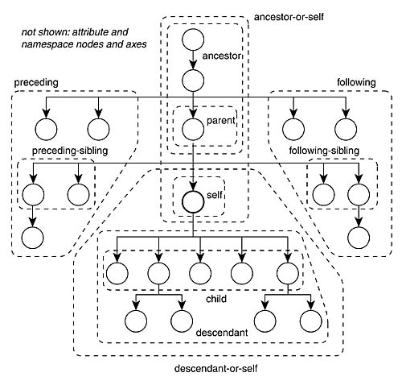

简介
在很多情况下，我们都需要一个能模拟用户在浏览器中行为的工具。可能我们会觉得抓包请求的方式过于复杂且容易被网站的反爬虫机制封杀，而我们很多情况下又不是非常在意性能，此时 Selenium 就是一个适合的选择。
Selenium 是一个将浏览器自动化的工具，一般所说的 Selenium 指的是 Selenium WebDriver。
旗下有三套件：
- WebDriver：是一套操作浏览器的 API
- IDE：具体实现就是一款浏览器插件，可以在 Chrome 和 Firefox 上面搜索安装。能够记录浏览器操作的步骤，并导出为编程文件（如 .py)。 可以作为学习 WebDriver 的工具
- Grid：跨平台远程自动操作脚本
Selenium 还为各类语言提供了客户端使用户可以在各类语言里直接进行调用。
Selenium最初的目的是为网页提供自动化测试的工具，然而现在更多的被用在爬虫等领域。
安装
这篇文章使用 Python 作为基础环境。请先安装最新版的 Python 到系统上面。然后执行 pip install selenium，安装 selenium。由于 Selenium 需要对浏览器进行操作，因此除了 Selenium，我们还需要下载浏览器驱动。注意：驱动需要下载浏览器对应的版本。
| Browser | Download URL |
|---|---|
| Firefox | https://github.com/mozilla/geckodriver/releases |
| Chrome | https://chromedriver.chromium.org/downloads |
Python 需要调用浏览器的 driver，我们需要指定 driver 的位置。 如果 selenium 找不到 driver， 会报如下错误
raise WebDriverException(selenium.common.exceptions.WebDriverException: Message: ‘geckodriver’ executable needs to be in PATH.)
方法 1
以 Windows 10 和 firefox 为例：将
geckodriver.exe放到下面的路径，不能修改文件名：
C:\Users\Bin\AppData\Local\Programs\Python\Python310\Scripts\方法 2
或者，添加到系统路径echo %PATH% setx PATH "%PATH%;C:\WebDriver\bin"然后 cmd 运行
chromedriver.exe， 如果有以下提示，代表成功Starting ChromeDriver 95.0.4638.54 (d31a821ec901f68d0d34ccdbaea45b4c86ce543e-refs/branch-heads/4638@{#871}) on port 9515 Only local connections are allowed. Please see https://chromedriver.chromium.org/security-considerations for suggestions on keeping ChromeDriver safe. ChromeDriver was started successfully.方法 3
直接指定 driver 的路径service = Service(executable_path="/path/to/chromedriver") driver = webdriver.Chrome(service=service)
基本语法
Chrome
from selenium import webdriver from selenium.webdriver.chrome.options import Options as ChromeOptions options = ChromeOptions() driver = webdriver.Chrome(options=options) driver.quit()Firefox
from selenium.webdriver.firefox.options import Options as FirefoxOptions options = FirefoxOptions() driver = webdriver.Firefox(options=options) driver.quit()基本操作(8个)
基于 Selenium 4.1.0
driver = webdriver.Chrome() # 指定浏览器驱动，Chrome 的写法大小写敏感，Firefox 同样 driver.get("http://www.google.com") # take action on browser title = driver.title # request browser information, such as browser size/position, cookies driver.implicitly_wait(0.5) # Establish Waiting Strategy. An implicit wait is rarely the best solution, but it's the easiest to demonstrate here, so we'll use it as a placeholder. search_box = driver.find_element(By.NAME, "q") # Find an element search_button = driver.find_element(By.NAME, "btnK") # same as above search_box.send_keys("Selenium") # take action on element search_button.click() # same as above driver.find_element(By.NAME, "q").get_attribute("value") # request element information driver.quit() # end the seesionFirefox option
firefox set a custom profile
https://www.programcreek.com/python/example/100026/selenium.webdriver.FirefoxProfile
from selenium.webdriver.firefox.options import Options from selenium.webdriver.firefox.firefox_profile import FirefoxProfile options=Options() firefox_profile = FirefoxProfile() firefox_profile.set_preference("javascript.enabled", False) options.profile = firefox_profileOR (旧版本的 selenium 使用，现在 FirefoxProfile 已经弃用)
import os from selenium import webdriver fp = webdriver.FirefoxProfile() fp.set_preference("browser.download.dir", os.getcwd()) browser = webdriver.Firefox(firefox_profile=fp)back & forward & refresh
driver.get("https://selenium.dev") driver.back() driver.forward() driver.refresh()alert
from selenium.webdriver.common.by import By from selenium import webdriver driver = webdriver.Firefox() driver.get("https://www.selenium.dev/documentation/webdriver/browser/alerts/") # Click the link to activate the alert driver.find_element(By.LINK_TEXT, "See an example alert").click() # Wait for the alert to be displayed and store it in a variable alert = wait.until(expected_conditions.alert_is_present()) # Store the alert text in a variable text = alert.text # Press the OK button alert.accept() # confirm operation # Click the link to activate the alert driver.find_element(By.LINK_TEXT, "See a sample confirm").click() # Wait for the alert to be displayed wait.until(expected_conditions.alert_is_present()) # Store the alert in a variable for reuse alert = driver.switch_to.alert # Store the alert text in a variable text = alert.text # Press the Cancel button alert.dismiss() # prompt operation # Click the link to activate the alert driver.find_element(By.LINK_TEXT, "See a sample prompt").click() # Wait for the alert to be displayed wait.until(expected_conditions.alert_is_present()) # Store the alert in a variable for reuse alert = Alert(driver) # Type your message alert.send_keys("Selenium") # Press the OK button alert.accept()cookie
from selenium import webdriver driver = webdriver.Chrome() # Navigate to url driver.get("http://www.example.com") # Adds the cookie into current browser context driver.add_cookie({"name": "foo", "value": "bar"}) # Get cookie details with named cookie 'foo' print(driver.get_cookie("foo")) # 注意，是用 ‘foo' 来查找。 # 可以追加多个 cookie，这些 cookie 组成一个列表。 driver.add_cookie({"name": "test1", "value": "cookie1"}) driver.add_cookie({"name": "test2", "value": "cookie2"}) # Get all available cookies print(driver.get_cookies()) # Delete a cookie with name 'test1' driver.delete_cookie("test1") # Deletes all cookies driver.delete_all_cookies()windows & tabs
driver.current_window_handle # 获取当前的 window handle driver.window_handles # 获取所有的 handle, 返回列表 driver.switch_to.window(window_handle) # 切换到其他 tab # Opens a new tab and switches to new tab driver.switch_to.new_window('tab') # Opens a new window and switches to new window driver.switch_to.new_window('window') driver.close() # close current tab driver.quit() # close all the tabsQuit will:
- Close all the windows and tabs associated with that WebDriver session
- Close the browser process
- Close the background driver process
Notify Selenium Grid that the browser is no longer in use so it can be used by another session (if you are using Selenium Grid)
auto quit：
with webdriver.Firefox() as driver: # WebDriver code here... # WebDriver will automatically quit after indentationtry: #WebDriver code here... finally: driver.quit()window size & position
width = driver.get_window_size().get("width") height = driver.get_window_size().get("height") driver.set_window_size(1024, 768) x = driver.get_window_position().get('x') y = driver.get_window_position().get('y') driver.set_window_position(0, 0) driver.maximize_window() driver.minimize_window() driver.fullscreen_window()screenshot
driver.save_screenshot('./imagetest.png') # 只能截取当前浏览器显示的区域 ele = driver.find_element(By.CSS_SELECTOR, 'h1') # Returns and base64 encoded string into image ele.screenshot('./image.png') # 截取选中的元素locator
这里最好用的当属
XPATH，掌握了这个，其他可以不用滴。后面有关于 XPATH 用法的介绍Locator Description class name Locates elements whose class name contains the search value (compound class names are not permitted) css selector Locates elements matching a CSS selector id Locates elements whose ID attribute matches the search value name Locates elements whose NAME attribute matches the search value link text Locates anchor elements whose visible text matches the search value partial link text Locates anchor elements whose visible text contains the search value. If multiple elements are matching, only the first one will be selected. tag name Locates elements whose tag name matches the search value xpath Locates elements matching an XPath expression find_element 函数用法
示例代码：
<ol id="vegetables"> <li class="potatoes">… <li class="onions">… <li class="tomatoes"><span>Tomato is a Vegetable</span>… </ol> <ul id="fruits"> <li class="bananas">… <li class="apples">… <li class="tomatoes"><span>Tomato is a Fruit</span>… </ul>fruits = driver.find_element(By.ID, "fruits") fruit = fruits.find_elements(By.CLASS_NAME, "tomatoes") fruit = driver.find_elements(By.CSS_SELECTOR,"#fruits .tomatoes") plants = driver.find_elements(By.TAG_NAME, "li") for e in plants: print(e.text)示例代码：
<input class="gLFyf gsfi" jsaction="paste:puy29d;" maxlength="2048" name="q" type="text" aria-autocomplete="both" aria-haspopup="false" autocapitalize="none" autocomplete="off" autocorrect="off" autofocus="" role="combobox" spellcheck="false" title="Google 搜索" value="" aria-label="搜索" data-ved="0ahUKEwiU6uvQ4_b1AhVjJ0QIHVxJAeAQ39UDCAQ">from selenium import webdriver from selenium.webdriver.common.by import By driver = webdriver.Firefox() driver.get("https://www.google.com") driver.find_element(By.CSS_SELECTOR, '[name="q"]').send_keys("webElement") driver.find_element(By.NAME, "q") driver.find_element(By.CLASS_NAME, "gLFyf").send_keys("webElement") # 注意，class 有两个：gLFyf gsfi, 中间是个空格分开 # Get attribute of current active element attr = driver.switch_to.active_element.get_attribute("title") print(attr) # "Google 搜索"click & sendkey
.click() driver.find_element(By.NAME, "q").send_keys("webdriver" + Keys.ENTER)from selenium import webdriver from selenium.webdriver.common.by import By driver = webdriver.Chrome() # Navigate to url driver.get("http://www.google.com") # Store 'SearchInput' element SearchInput = driver.find_element(By.NAME, "q") SearchInput.send_keys("selenium") # Clears the entered text SearchInput.clear()查看元素属性
value = driver.find_element(By.NAME, 'btnK').is_enabled() .is_selected() .tag_name # 没有括号 .is_displayed()res = driver.find_element(By.CSS_SELECTOR, "h1").rect #返回字典格式的 长宽，左上角的坐标数据 cssValue = driver.findElement(By.LINK_TEXT, "More information...").value_of_css_property('color') # Get CSS Value text = driver.find_element(By.CSS_SELECTOR, "h1").text # get the textSelect
from selenium.webdriver.support.select import Select select_element = driver.find_element(By.ID,'selectElementID') select_object = Select(select_element) # <select> # <option value=value1>Bread</option> # <option value=value2 selected>Milk</option> # <option value=value3>Cheese</option> # </select> # Select an <option> based upon the <select> element's internal index select_object.select_by_index(1) # Select an <option> based upon its value attribute select_object.select_by_value('value1') # Select an <option> based upon its text select_object.select_by_visible_text('Bread') # Return a list[WebElement] of options that have been selected all_selected_options = select_object.all_selected_options # Return a WebElement referencing the first selection option found by walking down the DOM first_selected_option = select_object.first_selected_option # Return a list[WebElement] of options that the <select> element contains all_available_options = select_object.options # Deselect an <option> based upon the <select> element's internal index select_object.deselect_by_index(1) # Deselect an <option> based upon its value attribute select_object.deselect_by_value('value1') # Deselect an <option> based upon its text select_object.deselect_by_visible_text('Bread') # Deselect all selected <option> elements select_object.deselect_all() does_this_allow_multiple_selections = select_object.is_multiple # Finally, some <select> elements allow you to select more than one option. You can find out if your <select> element is one of these by using this基于相对位置的定位
email_locator = locate_with(By.TAG_NAME, "input").above({By.ID: "password"}) submit_locator = locate_with(By.TAG_NAME, "button").below({By.ID: "email"}.to_right_of({By.ID: "cancel"}) email_locator = locate_with(By.TAG_NAME, "input").near({By.ID: "lbl-email"})
wait
from selenium.webdriver.support.ui import WebDriverWait
driver.navigate("file:///race_condition.html")
el = WebDriverWait(driver).until(lambda d: d.find_element_by_tag_name("p"))
assert el.text == "Hello from JavaScript!"
WebDriverWait(driver, timeout=3).until(some_condition)
driver = Firefox()
driver.get("http://somedomain/url_that_delays_loading")
wait = WebDriverWait(driver, 10, poll_frequency=1, ignored_exceptions=[ElementNotVisibleException, ElementNotSelectableException])
element = wait.until(EC.element_to_be_clickable((By.XPATH, "//div")))xpath
https://www.lambdatest.com/blog/complete-guide-for-using-xpath-in-selenium-with-examples/
//div[@id='app']/div 与 //div[@id='app']//div 区别：前者只定位 id 为 app 的 div 的子代 div。
绝对路径
/html//div/div/div/div[1]/div/a/img
/，一个斜杆表示绝对路径，html 后有两个 //， 表示相对路径。相对路径和绝对路径可以混用（个人理解）相对路径
//tagname[@Attribute='Value']
相对路径，两个//
例子：
//a[@class='googleSignInBtn']
//input[@name='phone']
//a[@href='/login']
//input[@placeholder='Full Name*']contains
//tagname[contains(@attribute,constantvalue)]
constant value: 常量例子：
//button[contains(@class,'submit-btn')]
注意下面的 html 代码，class 有很多个属性，我们使用 contains 就可以只用包含其中的一个<button id="signup-button" data-sitekey="6LceAqQaAAAAAO0LcIgLnXy3gH_M3X5aDrqUihHw" data-callback="onSubmit" data-amplitude="R_signup" type="submit" class="w-full influ2--goal submit-btn font-semibold tracking-custom flex items-center xxxl:h-54 xxl:h-47 h-40 bg-black text-white xxxl:text-size-16 xxl:text-size-14 text-size-12 justify-center rounded submit-btn g-recaptcha">Free Sign Up</button>//a[contains(.,'Ask Question')]
a 标签下有 ‘ask Question’ text，最常用//a[text()='Ask Question']
与上面的区别：
https://stackoverflow.com/questions/69909751/why-is-xpath-containstext-substring-not-working-as-expected?noredirect=1&lq=1contains 与 [@Attribute=’Value’] 用法的区别：contains 可以只包含属性中的
部分字段，而后者必须全部包含
例如：<span id='select2-chosen-19'>，后面的19是随机生成的，我们在定位的时候，就可以选择 contains，
//span[contains(@id,'select2-chosen')]text()
//tagname[text()='Text of the Web Element']
//span[text()='Sign up with Google']and & or
XPath=//tagname[@attribute1=value1 or @attribute2=value1]
XPath=//tagname[@attribute1=value1 and @attribute2=value1]
必须使用小写，不然会报错//input[@name="email" and contains(@placeholder,'Email')]Starts-With()
The Starts-With() method is similar to the Contains() method. It is helpful in the case of web elements whose attribute value can change dynamically.
//tagname[starts-with(@attribute,value)]
//input[starts-with(@placeholder,'Phone')]<input id="phone" type="phone" pattern="[0-9\+\- ]+" placeholder="Phone (+1 555 555 5555)*" name="phone" value="" required="required" class="w-full tracking-custom xxxl:text-size-18 xxl:text-size-16 text-size-14 placeholder:text-gray-300 text-black rounded-md py-10 xxxl:pl-24 xxl:pl-18 pl-12 pr-75 xxxl:h-54 xxl:h-47 h-40 ">index
//tagname[@attribute='value'][Index Number](//div[@class='form-group']//select)[2]
找到第二个 div 下的 select 元素chained Xpath
//tagname1[@attribute1=value1]//tagname2[@attribute2=value2]//label[@name='i_agree']//input[@data-amplitude='R_pp']<label class="i_agree flex items-center xxxl:text-size-16 xxl:text-size-14 text-size-12 text-black font-normal mb-0"><input id="i-agree" data-amplitude="R_agree" type="checkbox" name="i_agree" required="required" class=" "> <samp class="customcheckbox" style="margin-right: 5px;"></samp> <div data-amplitude="R_pp">I agree to LambdaTest's <a target="_blank" href="https://www.lambdatest.com/legal/privacy" class="text-blue-100 hover:underline">Privacy Policy</a> & <a target="_blank" data-amplitude="R_tos" href="https://www.lambdatest.com/legal/terms-of-service" class="text-blue-100 hover:underline">Terms of Service</a></div></label>
XPath axes
总结如下，一个图胜过千言万语。

Following 与 Following-Sibling 区别：前者是当前节点后面所有的节点的总和（范围是整个 DOM），而后者则是同一个 parent 下后面的节点的总和
Following
This can be used when you have a unique attribute of the tag before your actual web element. For example, on using Following, you can have all the elements that
follow the current node, and you can simply useIndexor anotherchained XPathto locate your actual web element.//tagname[@attribute='value']//following::tagname//div[contains(@class,'password-group')]//following::div//input[@type='phone']<div class="w-full custom__border xxxl:mt-23 xxl:mt-20 mt-18 password-group"> <div class="w-full relative custom__border "> <input type="password" name="password" placeholder="Desired Password*" required="required" id="userpassword" minlength="8" class="w-full tracking-custom xxxl:text-size-18 xxl:text-size-16 text-size-14 placeholder:text-gray-300 text-black rounded-md py-10 xxxl:pl-24 xxl:pl-18 pl-12 pr-75 xxxl:h-54 xxl:h-47 h-40 "> <div class="absolute right-0 top-0 flex items-center xxxl:h-54 xxl:h-47 h-40 font-normal cursor-pointer pr-18 uppercase"> <span onclick="togglePasswordVisibility(this, 'userpassword');" class="password-group-text xxxl:text-size-14 xxl:text-size-12 text-size-10 block text-gray-300 tracking-custom">Show</span> </div> </div> </div> <div class="w-full custom__border xxxl:mt-23 xxl:mt-20 mt-18 "> <input id="phone" type="phone" pattern="[0-9\+\- ]+" placeholder="Phone (+1 555 555 5555)*" name="phone" value="" required="required" class="w-full tracking-custom xxxl:text-size-18 xxl:text-size-16 text-size-14 placeholder:text-gray-300 text-black rounded-md py-10 xxxl:pl-24 xxl:pl-18 pl-12 pr-75 xxxl:h-54 xxl:h-47 h-40 "> </div>Following-Sibling
As the term signifies, siblings are those nodes that share the same parent or are at the same level. Hence, Following-Sibling will return you the node
at the same levelandafterthe current node.//tagname[@attribute='value']//following-sibiling::tagname//option[@value='Manager']//following-sibling::option[1]
same as
//option[@value='Manager']//following-sibling::option[@value='Director/VP']<select value="value=" id="designation" required="required" name="designation" class="w-full tracking-custom xxxl:text-size-18 xxl:text-size-16 text-size-14 placeholder:text-gray-300 text-black rounded-md py-10 xxxl:px-24 xxl:px-18 px-12 xxxl:h-54 xxl:h-47 h-40 custom_select"> <option selected="selected" value="" disabled="disabled" hidden="hidden">Designation/Role</option> <option value="Student/Freelancer">Student / Freelancer</option> <option value="Developer/Tester">Developer / Tester</option> <option value="Manager">Manager</option> <option value="Director/VP">Director / VP</option> <option value="Founder/CXO">Founder / CXO</option> </select>Preceding
与 following 相对，寻找当前节点的前的元素
locate all the elements before the current node
//tagname[@attribute='value']//preceding::tagnamePreceding-Sibling
get all the nodes that are siblings or at the same level but are before your current node.
Child
//tagname[@attribute='value']//child::tagnameParent
//tagname[@attribute='value']//parent::tagnameDescendant
Descendants refer to the child nodes, grandchild nodes, etc.
//tagname[@attribute='value']//descendant::tagnameAncestor
Ancestors refer to the parent nodes, grandparent nodes, etc.
//tagname[@attribute='value']//ancestors::tagname特殊?
//input[attribute::name = 'q']
scroll
https://www.lambdatest.com/blog/scroll-a-webpage-in-selenium-using-java/
JavaScriptExecutor in Selenium is used to execute the code written in Javascript within the Selenium automation framework. This interface has two methods namely
ExecuteScriptandExecuteAsyncScriptwhich are used to execute the JavaScript code.
scroll down to the bottom of the page
移动到网页底部
driver.execute_script("window.scrollTo(0, document.body.scrollHeight)")移动到网页顶部
("window.scrollTo(0,0)")scroll by the visibility of WebElement on the page
test_element = driver.find_element(By.XPATH, "//a[contains(.,'关于我们')]") driver.execute_script("arguments[0].scrollIntoView();", test_element)scroll down in a page by specified pixels
driver.execute_script("window.scrollBy(0,3000)")specify the number of pixels the page has to be scrolled。第一个参数控制左右。正数向右，负数向左。第二个参数控制上下，正数为向下，负数向上。